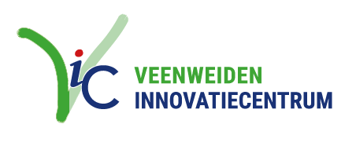

<!doctype html>
<html lang="nl">
<head>
<meta charset="utf-8">
<meta name="viewport" content="width=device-width, initial-scale=1.0">
<title>Veenweideboeren Visie</title>
<link href="https://fonts.googleapis.com/css2?family=Playfair+Display:ital,wght@0,400;0,700;1,400&family=DM+Sans:wght@300;400;500;600&family=Roboto:wght@300;400;500;700&family=JetBrains+Mono:wght@400&display=swap" rel="stylesheet">
<link rel="stylesheet" href="site/document-styles.css">
<link rel="stylesheet" href="styles.css">
<link rel="stylesheet" href="site/vic-skin.css">
<link rel="stylesheet" href="site/v4-mag-c.css">
<link rel="stylesheet" href="site/v4-mag.css">
<link rel="stylesheet" href="site/v4-notities.css">
<script src="https://unpkg.com/react@18.3.1/umd/react.development.js" integrity="sha384-hD6/rw4ppMLGNu3tX5cjIb+uRZ7UkRJ6BPkLpg4hAu/6onKUg4lLsHAs9EBPT82L" crossorigin="anonymous"></script>
<script src="https://unpkg.com/react-dom@18.3.1/umd/react-dom.development.js" integrity="sha384-u6aeetuaXnQ38mYT8rp6sbXaQe3NL9t+IBXmnYxwkUI2Hw4bsp2Wvmx4yRQF1uAm" crossorigin="anonymous"></script>
<script src="https://unpkg.com/@babel/standalone@7.29.0/babel.min.js" integrity="sha384-m08KidiNqLdpJqLq95G/LEi8Qvjl/xUYll3QILypMoQ65QorJ9Lvtp2RXYGBFj1y" crossorigin="anonymous"></script>
<script src="site/content-visie.js"></script>
<script src="site/content-programma.js"></script>
<script src="site/content-toolbox.js"></script>
<script src="site/v4-noten.js"></script>
<script src="site/v4-notities.js"></script>
<style>
  /* shell-aanvullingen op de documentstijl */
  body { min-height: 100vh; }
  .v4-doc { max-width: 760px; margin: 0 auto; }
  .v4-doc section { animation: none; }
  /* magazinevorm: ruimere maat, grotere leestypografie, meer lucht */
  .v4-mag { max-width: 820px; font-size: 17px; line-height: 1.85; }
  .v4-mag h2 { font-size: 34px; margin-top: 4.5rem; }
  .v4-mag h2:first-of-type { margin-top: 0; }
  .v4-mag h3 { font-size: 22px; margin-top: 2.6rem; }
  .v4-mag p { margin-bottom: 1.3rem; }
  .v4-mag > section > h2 + p:first-of-type,
  .v4-mag > section > p:first-of-type { font-size: 19px; line-height: 1.75; color: var(--text2); }
  /* documentvorm: hoofdstuk uitgeklapt in de pagina; koptitel staat al op de kaart */
  .v4-doc-inline { font-size: 14.5px; max-width: none; }
  .v4-doc-inline > section > h2:first-of-type { display: none; }
  /* magazinevorm: hoofdstuktitel staat in de spread-opener */
  .v4-mag-sectie > section > h2:first-of-type { display: none; }
  /* eerste hoofdstuktitel direct onder 'alles inklappen' */
  .v4-allesklap + section > h2:first-of-type { margin-top: 6px; }
  /* bouwlint — schuine rode banner linksboven op de startpagina */
  .v4-bouwlint {
    position: fixed; top: 0; left: 0; z-index: 400;
    width: 280px; padding: 9px 0;
    transform: translate(-70px, 48px) rotate(-45deg);
    background: var(--vic-red, #cd1719); color: #fff;
    font-family: var(--font-sans); font-size: 12.5px; font-weight: 700;
    letter-spacing: 0.12em; text-transform: uppercase; text-align: center;
    box-shadow: 0 3px 10px rgba(0,0,0,.25);
    pointer-events: none;
  }
  /* magazine-cover: expliciete kleuren (bestand tegen tekst-instrumentatie-spans) */
  .v4-cover-titel, .v4-cover-titel span { color: #fff; }
  .v4-cover-titel .cv-groen, .v4-cover-titel .cv-groen span { color: #9fd694; }
  .v4-header {
    position: sticky; top: 0; z-index: 50;
    background: rgba(255,255,255,.92); backdrop-filter: blur(8px);
    border-bottom: 1px solid var(--vic-border);
  }
  .v4-header-inner {
    max-width: 1020px; margin: 0 auto; padding: 8px 24px;
    display: flex; align-items: center; justify-content: space-between; gap: 16px; flex-wrap: wrap;
  }
  .v4-wordmark { font-family: var(--font-sans); font-weight: 700; font-size: 16px; text-transform: uppercase; letter-spacing: 0.02em; color: var(--vic-green); cursor: pointer; }
  .v4-wordmark .wm-blauw { color: var(--vic-blue); }
  .v4-navlink {
    font-family: var(--font-sans); font-size: 15px; font-weight: 700;
    text-transform: uppercase; letter-spacing: 0.02em;
    color: var(--vic-blue); cursor: pointer; padding: 6px 0;
    border-bottom: 3px solid transparent;
  }
  .v4-navlink:hover { color: var(--vic-green); }
  .v4-navlink.actief { color: var(--vic-green); border-bottom-color: var(--vic-green); }
  .v4-main { max-width: 1020px; margin: 0 auto; padding: 40px 24px 100px; }
  /* sticky inhoudsopgave — bewust subtiel; alleen in de documentvorm, op brede schermen */
  .v4-doc-layout { display: flex; justify-content: center; align-items: flex-start; gap: 32px; }
  .v4-doc-body { flex: 0 1 760px; min-width: 0; }
  .v4-toc {
    position: sticky; top: 96px; align-self: flex-start;
    flex: 0 0 176px; width: 176px;
    max-height: calc(100vh - 120px); overflow-y: auto;
    -webkit-overflow-scrolling: touch;
    background: rgba(0,0,0,.025); border-radius: 10px;
    padding: 12px 8px;
  }
  .v4-toc-kop {
    margin: 0 0 8px; padding-left: 12px;
    font-family: var(--font-sans); font-size: 10px; font-weight: 600;
    letter-spacing: 0.16em; text-transform: uppercase; color: var(--text3); opacity: .7;
  }
  .v4-toc-link {
    display: flex; gap: 8px; align-items: baseline;
    padding: 5px 12px; border-left: 2px solid transparent;
    font-family: var(--font-sans); font-size: 14.5px; line-height: 1.7;
    color: var(--text3); text-decoration: none; cursor: pointer;
    transition: color 120ms ease, border-color 120ms ease;
  }
  .v4-toc-link:hover { color: var(--text); }
  .v4-toc-link.actief { color: var(--text); border-left-color: rgba(0,0,0,.4); font-weight: 700; }
  .v4-toc-letter { flex: 0 0 20px; font-weight: 600; font-size: 13.5px; color: var(--text3); }
  .v4-toc-link.actief .v4-toc-letter { color: var(--text); font-weight: 700; }
  .v4-toc-titel { display: -webkit-box; -webkit-line-clamp: 2; -webkit-box-orient: vertical; overflow: hidden; }
  @media (max-width: 1040px) { .v4-toc { display: none; } .v4-doc-layout { gap: 0; } }
</style>
</head>
<body>
<div id="root"></div>
<script type="text/babel" src="tweaks-panel.jsx"></script>
<script type="text/babel" src="site/v4-shared.jsx"></script>
<script type="text/babel" src="site/v4-mag-c.jsx"></script>
<script type="text/babel" src="site/v4-mag-hoofdstuk.jsx"></script>
<script type="text/babel" src="site/v4-visie.jsx"></script>
<script type="text/babel" src="site/v4-programma.jsx"></script>
<script type="text/babel" src="site/v4-toolbox.jsx"></script>
<script type="text/babel">
const { Html, AkteViewer, TerugKnop, Kicker, DocCard, VisieLaag1, ProgrammaPagina, ToolboxRegister, FichePagina, visieByid, HOOFDSTUKKEN } = window;
const { useTweaks, TweaksPanel, TweakSection, TweakRadio, TweakColor } = window;

const TWEAK_DEFAULTS = /*EDITMODE-BEGIN*/{
  "groot_vlak": "geen",
  "binnenvlak": "#f5f6f4"
}/*EDITMODE-END*/;

const GROOT_VLAK_KLEUR = { geen: 'transparent', lichtgrijs: '#f5f6f4', lichtgroen: '#eef5ec' };

/* ---- keuzescherm: samenvatting + vormkeuze + twee documenten ---- */

/* samenvatting gesplitst: kop (badges + titel) · leeswijzer ertussen · rest */
const SAMENVATTING_DELEN = (() => {
  const d = document.createElement('div');
  d.innerHTML = visieByid['samenvatting'].html;
  const meta = d.querySelector('.meta-row');
  const h1 = d.querySelector('h1');
  if (h1) h1.innerHTML = h1.innerHTML.replace(/\u2014\s*visie\s*$/i, '\u2014 visie, programmavoorstel en toolbox');
  const kop = (meta ? meta.outerHTML : '') + (h1 ? h1.outerHTML : '');
  if (meta) meta.remove();
  if (h1) h1.remove();
  return { kop, rest: d.innerHTML };
})();

function VormKaart({ naam, sub, onClick }) {
  const [hover, setHover] = React.useState(false);
  return (
    <div onClick={onClick} onMouseEnter={() => setHover(true)} onMouseLeave={() => setHover(false)}
      style={{
        border: '1.5px solid ' + (hover ? 'var(--accent)' : 'rgba(0,0,0,.12)'),
        background: 'var(--bg3)', borderRadius: 'var(--radius-lg)', padding: '22px 24px',
        cursor: 'pointer', textAlign: 'center',
        transition: 'transform 140ms ease-out, border-color 140ms ease-out, box-shadow 140ms ease-out',
        transform: hover ? 'translateY(-3px)' : 'none',
        boxShadow: hover ? '0 8px 20px rgba(62,166,53,.14)' : '0 2px 6px rgba(0,0,0,.04)',
      }}>
      <p style={{ margin: 0, fontFamily: 'var(--font-display)', fontWeight: 700, fontSize: 18, color: hover ? 'var(--accent2)' : 'var(--text)' }}>{naam}</p>
      <p style={{ margin: '8px 0 0', fontSize: 13.5, color: 'var(--text2)', lineHeight: 1.55 }}>{sub}</p>
    </div>
  );
}

function Keuzescherm({ kiesVorm, ga }) {
  return (
    <div data-screen-label="Keuzescherm">
      <div className="v4-bouwlint">onder constructie</div>
      <article className="v4-doc">
        <Html html={SAMENVATTING_DELEN.kop}></Html>
        <p style={{ margin: '2px 0 34px', fontSize: 14.5, lineHeight: 1.65, color: 'var(--text2)', maxWidth: 560 }}>
          Deze website vertelt de visie van het VIC op de toekomst van de veenweideboer — in lagen.
          Hieronder eerst de kern in het kort. Daarna kies je zelf hoe je verder leest: als doorlopend
          document of als magazine. Bij de visie horen twee verdiepende documenten — het
          programmavoorstel en de toolbox — altijd bereikbaar via de navigatie bovenaan.
        </p>
        <Html html={SAMENVATTING_DELEN.rest}></Html>
      </article>

      {/* de drie aktes — het hart van het verhaal */}
      <div style={{ maxWidth: 760, margin: '40px auto 0' }}>
        <div style={{ display: 'grid', gridTemplateColumns: '1fr 1fr 1fr', gap: 16 }}>
          {AKTES.map((a) => (
            <figure key={a.n} onClick={() => ga({ page: 'visie' })} style={{ margin: 0, cursor: 'pointer' }}>
              
              <figcaption style={{ marginTop: 8, fontSize: 12.5, fontFamily: 'var(--font-sans)', color: 'var(--text2)' }}>
                <strong style={{ color: 'var(--vic-blue)' }}>akte {a.n}</strong> — {a.sub}
              </figcaption>
            </figure>
          ))}
        </div>
        <p style={{ margin: '10px 0 0', fontSize: 12.5, fontFamily: 'var(--font-sans)', color: 'var(--text3)' }}>
          één polderblok, drie aktes — het hart van het verhaal; lees het in hoofdstuk E van de visie
        </p>
      </div>

      <hr style={{ border: 'none', borderTop: '1px solid rgba(0,0,0,.1)', maxWidth: 760, margin: '44px auto' }} />

      <div style={{ maxWidth: 760, margin: '0 auto', textAlign: 'center' }}>
        <Kicker>verder lezen — kies je vorm</Kicker>
        <p style={{ margin: '10px auto 26px', fontSize: 14, color: 'var(--text2)', maxWidth: 460 }}>
          De lezer kiest hoe die de diepte ingaat — en kan onderweg altijd wisselen.
        </p>
        <div style={{ display: 'grid', gridTemplateColumns: '1fr 1fr', gap: 28 }}>
          <VormKaart naam="document-stijl" sub="compact, alles in kaders — leest als rapport" onClick={() => kiesVorm('doc')}></VormKaart>
          <VormKaart naam="magazine-stijl" sub="lucht, inzetjes, grote beelden — leest als verhaal" onClick={() => kiesVorm('mag')}></VormKaart>
        </div>
      </div>

      <hr style={{ border: 'none', borderTop: '1px solid rgba(0,0,0,.1)', maxWidth: 760, margin: '44px auto' }} />

      <div style={{ maxWidth: 760, margin: '0 auto', textAlign: 'center' }}>
        <Kicker color="var(--blue)">bij deze visie horen twee documenten</Kicker>
        <div style={{ display: 'grid', gridTemplateColumns: '1fr 1fr', gap: 28, marginTop: 26, textAlign: 'left' }}>
          <DocCard naam="het programmavoorstel" sub="de 'offerte' bij deze visie — wat het VIC voorstelt te doen, wat het vraagt en wat het oplevert" onClick={() => ga({ page: 'programma' })}></DocCard>
          <DocCard naam="de toolbox" sub="alle maatregelen als fiches — per categorie, met literatuur; de verdieping waarmee we aan de slag gaan" onClick={() => ga({ page: 'toolbox' })}></DocCard>
        </div>
        <p style={{ margin: '32px 0 0', fontSize: 12.5, color: 'var(--text3)', fontFamily: 'var(--font-heading)' }}>
          documenten:&nbsp;
          <a href="../documenten/VIC's Veenweideboeren visie.html" target="_blank" style={{ color: 'var(--text2)' }}>⤓ visie</a> ·&nbsp;
          <a href="../documenten/VIC's Veenweideboeren programmavoorstel.html" target="_blank" style={{ color: 'var(--text2)' }}>⤓ programmavoorstel</a> ·&nbsp;
          <a href="../documenten/VIC's Veenweideboeren toolbox.html" target="_blank" style={{ color: 'var(--text2)' }}>⤓ toolbox</a>
        </p>
      </div>
    </div>
  );
}

/* ---- app + routing ---- */

function App() {
  const [t, setTweak] = useTweaks(TWEAK_DEFAULTS);
  const [route, setRoute] = React.useState(() => {
    return { page: 'keuze' }; // publieke demo: altijd openen op start
  });
  const [vorm, setVorm] = React.useState(() => localStorage.getItem('vic-v4-vorm') || 'doc');

  React.useEffect(() => { localStorage.setItem('vic-v4-route', JSON.stringify(route)); }, [route]);
  React.useEffect(() => { localStorage.setItem('vic-v4-vorm', vorm); }, [vorm]);

  React.useEffect(() => {
    const root = document.documentElement;
    root.style.setProperty('--v4-article-bg', GROOT_VLAK_KLEUR[t.groot_vlak] || 'transparent');
    root.style.setProperty('--v4-box-bg', t.binnenvlak);
  }, [t.groot_vlak, t.binnenvlak]);

  const ga = (r) => { setRoute(r); window.scrollTo(0, 0); };
  const kiesVorm = (v) => { setVorm(v); ga({ page: 'visie' }); };
  const wisselVorm = (v) => { setVorm(v); window.scrollTo(0, 0); };
  React.useEffect(() => { if (route.page === 'hoofdstuk') setRoute({ page: 'visie' }); }, []);
  const inVisie = route.page === 'visie' || route.page === 'hoofdstuk';

  return (
    <div>
      <header className="v4-header">
        <div className="v4-header-inner">
           ga({ page: 'keuze' })}
            style={{ height: 72, width: 'auto', display: 'block', cursor: 'pointer' }} />
          <div role="navigation" style={{ display: 'flex', gap: 36, alignItems: 'center' }}>
            <span className={'v4-navlink' + (route.page === 'keuze' ? ' actief' : '')} onClick={() => ga({ page: 'keuze' })}>start</span>
            <span className={'v4-navlink' + (inVisie ? ' actief' : '')} onClick={() => { setVorm('doc'); ga({ page: 'visie' }); }}>visie</span>
            <span className={'v4-navlink' + (route.page === 'programma' ? ' actief' : '')} onClick={() => ga({ page: 'programma' })}>programmavoorstel</span>
            <span className={'v4-navlink' + (route.page === 'toolbox' || route.page === 'fiche' ? ' actief' : '')} onClick={() => ga({ page: 'toolbox' })}>toolbox</span>
          </div>
        </div>
      </header>

      <div className="v4-main"><div className="v4-plane">
        {route.page === 'keuze' && <Keuzescherm kiesVorm={kiesVorm} ga={ga}></Keuzescherm>}

        {route.page === 'visie' && (
          <VisieLaag1 vorm={vorm} wisselVorm={wisselVorm}
            openHoofdstuk={(id) => ga({ page: 'hoofdstuk', id })}
            openToolbox={() => ga({ page: 'toolbox' })}></VisieLaag1>
        )}

        {route.page === 'programma' && (
          <ProgrammaPagina openToolbox={() => ga({ page: 'toolbox' })} openVisie={() => ga({ page: 'visie' })}></ProgrammaPagina>
        )}

        {route.page === 'toolbox' && (
          <ToolboxRegister cat={route.cat || null}
            setCat={(c) => setRoute({ page: 'toolbox', cat: c })}
            openFiche={(cat, idx) => ga({ page: 'fiche', cat, idx })}></ToolboxRegister>
        )}

        {route.page === 'fiche' && (
          <FichePagina catId={route.cat} idx={route.idx}
            terugRegister={() => ga({ page: 'toolbox', cat: route.cat })}
            openFiche={(cat, idx) => ga({ page: 'fiche', cat, idx })}></FichePagina>
        )}
      </div></div>

      <TweaksPanel>
        <TweakSection label="Vlakken"></TweakSection>
        <TweakRadio label="Groot vlak (artikel)" value={t.groot_vlak} options={['geen', 'lichtgrijs', 'lichtgroen']} onChange={(v) => setTweak('groot_vlak', v)}></TweakRadio>
        <TweakColor label="Binnenvlakken" value={t.binnenvlak} options={['#f5f6f4', '#e8f2e5', '#ffffff']} onChange={(v) => setTweak('binnenvlak', v)}></TweakColor>
      </TweaksPanel>
    </div>
  );
}

ReactDOM.createRoot(document.getElementById('root')).render(<App></App>);
</script>
</body>
</html>
